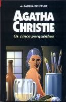

Os Cinco Porquinhos
Five Little Pigs
Amyas Crale era famoso por sua paixão pela pintura e pelas mulheres. Dezesseis anos atrás ele foi assassinado. Sua esposa foi julgada e condenada como sendo a autora do crime, não sendo enforcada porque havia circunstâncias atenuantes. Contudo, a pena foi comutada em trabalhos forçados para o resto da vida, o que não chegou a acontecer, pois faleceu um anos após o julgamento. Agora a filha do casal, Carla, convencida da inocência de sua mãe, propôs a Hercule Poirot um grande desafio: limpar o nome de sua mãe retornando à cena do crime e encontrando a falha de um crime aparentemente perfeito.
Fátima Pires: Em “Os cinco porquinhos”, o brilhante detetive Hercule Poirot precisa voltar ao passado para provar que a bela Mrs. Crale, condenada pela morte do marido há 16 anos atrás, era inocente, mesmo com todos as provas de culpa e descobrir a identidade do cruel envenenador do famoso pintor Charles Crale, que pode ser qual quer uma das 5 pessoas que estavam naquela casa no dia 18 de setembro.
Allan Jozala: Amyas Craile foi morto há dezesseis anos atrás e sua mulher foi condenada e morreu na prisão. Antes de falecer deixa uma carta para a sua filha Caroline de 5 anos jurando inocência. Caroline sabe que só o melhor detetive do mundo pode resolver este caso a procura do verdadeiro assassino. Hercule Poirot aceita a missão e se lembra de uma antiga canção de ninar. Leia este livro magnífico e descubra quem realmente matou Amyas Craile.